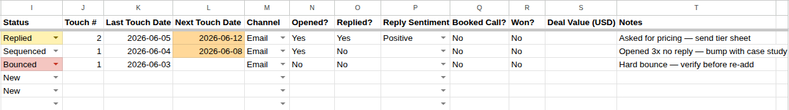

One spreadsheet for people who send their own cold emails: who you contacted, how good a fit they are, which touch they're on, when the next one is due, and whether anything turned into a call. No CRM subscription.

Instant download · ZIP with the CSV and two short guides · English · single-user licence
Get the tracker + SOPThe spreadsheet is free. It lives in a public GitHub repository, and the CSV there is byte-for-byte the same file as the one in the paid ZIP. If all you want is the sheet, take it from GitHub and don't buy anything.
That is the whole product: two short text guides on top of a free sheet. It is priced as that, not as a course.
Grouped by what they're for. Every row is one person, not one company: a named contact with a role converts, a generic inbox doesn't.
The column that does the work is Next Touch Date. You set it every time you log a touch, and after setup any date that has already passed turns orange, so the follow-ups you owe are the first thing you see when you open the sheet.
The setup guide turns the CSV into a working sheet in about five minutes: dropdowns on Status, Reply Sentiment and Channel (Google's help on in-cell dropdowns if you haven't made one before), colour rules on Status, a custom-formula rule that highlights overdue follow-ups, and six formulas for a small dashboard: contacts, emails sent, reply rate, meeting rate, open pipeline value and won revenue.
Correction, 5 Nov 2026. While building the sheet in the screenshot above, we found that two of the six formulas were wrong. Reply rate and meeting rate divided by every row whose status isn't "New", and that includes the empty rows below your data, so a fresh sheet showed about 0.1% instead of the real rate. On the three sample rows the original reply-rate formula returned 0.1%; the corrected one returns 33.3% (one reply out of three contacts touched). The corrected versions:
Reply rate: =IFERROR(COUNTIF(O2:O1000,"Yes")/(COUNTIF(I2:I1000,"<>New")-COUNTBLANK(I2:I1000)),0) Meeting rate: =IFERROR(COUNTIF(Q2:Q1000,"Yes")/(COUNTIF(I2:I1000,"<>New")-COUNTBLANK(I2:I1000)),0)
If you bought the pack before this date, paste these over the two lines in 02-setup.md. The other four formulas were correct.
It fits a freelancer, founder or small agency sending somewhere between 20 and 200 cold emails a week by hand, who keeps losing track of who is due a follow-up. It doesn't fit a team that needs shared inboxes, automatic sequences or open tracking. That's what outreach tools and CRMs are for, and a spreadsheet won't replace them.
cold-outreach-tracker.csv, a README, 01-sop.md and 02-setup.md. All plain text.; between formula arguments. Replace each comma inside the formulas with a semicolon. We hit this ourselves: the overdue-alert rule was rejected on a Ukrainian-locale sheet and accepted on an English one.Built and written by Charlie Morrison. The screenshot and the formula results on this page come from a real Google Sheet built from the shipped CSV on 5 Nov 2026.
← Browse all products